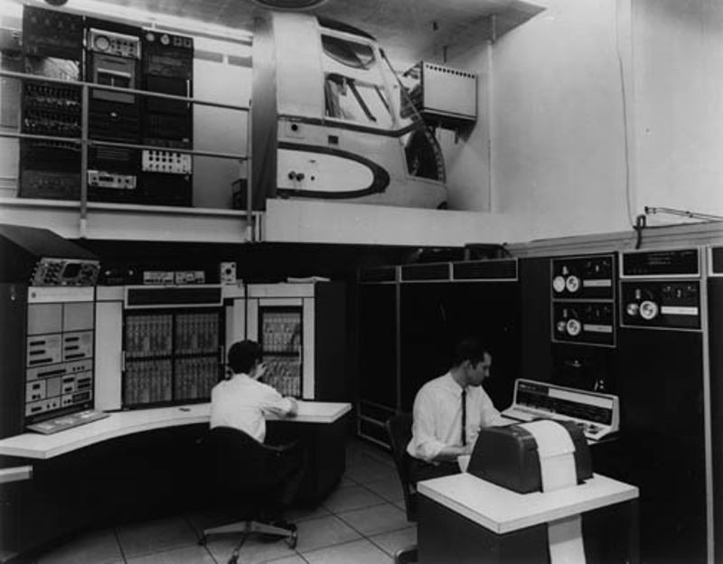
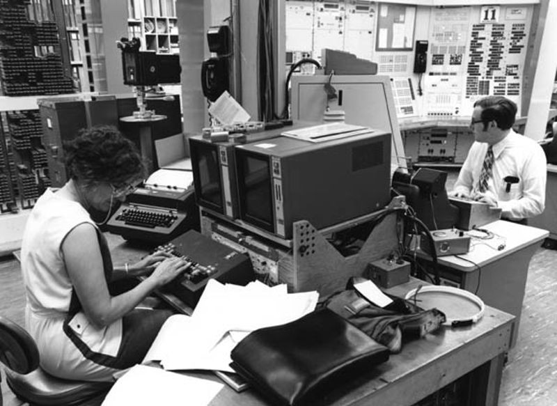
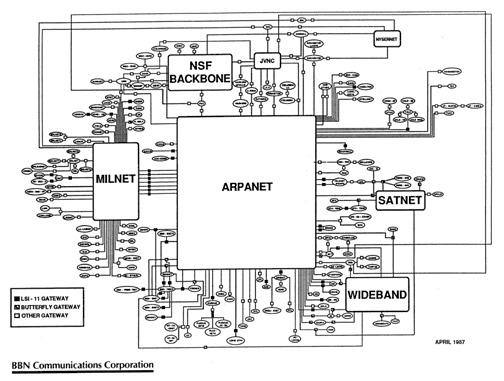
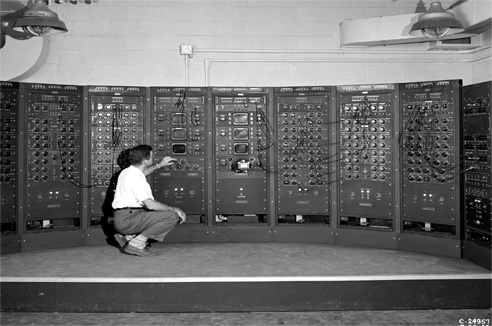

Table of Contents
In its short history, the Internet has had a revolutionizing effect, not only on communications and computing, but also on broader areas of life such as economics, culture, language, and social relations. In that same time, however, the Internet and, subsequently, the World Wide Web have undergone a number of permutations, and the intentions of its developers have not always coincided with the ways in which the technology has been realized. As the technology and its influence spread, of course, the designs of the original planners were diluted. From its origins as a military-based, Pentagon-funded networking architecture for experimental communications, the Internet flowered into perhaps the most sweeping revolution in the history of communications technology. The World Wide Web, meanwhile, grew from a vehicle designed to universalize the Internet and democratize electronically based information to a commercial juggernaut that transformed the way business is conducted.
Although in the popular imagination the Internet is a feature of the 1990s, the earliest inklings of the possibilities of networked computers can be traced to the early 1960s. In 1962, J.C.R. Licklider at the Massachusetts Institute of Technology (MIT) first elucidated his dream of a "Galactic Network" connecting computers across the globe for the distribution and access of data and programs. Licklider went on to become the first director of the Defense Advanced Research Projects Agency (DARPA), an arm of the U.S. Department of Defense and the body that funded and coordinated the original research into what became the Internet.
Licklider's MIT colleagues Leonard Kleinrock and Lawrence G. Roberts performed the ground-breaking work toward the development of the Inter-net's architecture. First, Kleinrock published a revolutionary paper touting the plausibility of using packet switching rather than circuits for communications, thereby paving the way for the necessary computer networking. Roberts built on Kleinrock's theories to devise the first wide-area computing network, using a regular, circuit-based telephone line to allow computers in Massachusetts and California to communicate directly. While the computers were indeed able to run programs and exchange data, Roberts was convinced that Roberts's insistence on the superiority of packet switching was correct.
Having joined DARPA, Roberts in 1967 presented a paper outlining his vision for the original version of the Internet, known as ARPANET, the specifications of which were set by the following fall. Roberts's main position was that the network DARPA was building could be expanded and put to greater use once it was completed. Kleinrock relocated to UCLA just in time for DARPA to send a proposal for the further development of his packet switching ideas for the network DARPA was constructing. Keleinrock and a handful of other interested scholars at UCLA established the Network Measurement Center for the ARPANET project.
ARPANET's first host computer was set up at Kleinrock's Network Measurement Center at the University of California-Los Angeles (UCLA) in 1969, and other nodes, at Stanford Research Institute (SRI), UC Santa Barbara (UCSB), and the University of Utah in Salt Lake City, were connected shortly afterward. As computers were added to ARPENET, the Network Working Group worked to devise a communication protocol that would enable different networks to talk to each other, resulting in the host-to-host Network Control Protocol (NCP), which was rolled out in 1970. Thus the Internet as we know it today began to bloom.
Still, for the first few years of its existence, ARPANET was largely unknown outside of the relatively esoteric group of technologists that was developing it. That changed in 1972, Robert Kahn of Bolt Beranek and Newman (BBN), one of the chief figures in the development of the ARPANET architecture, organized a conference at the International Computer Communication Conference (ICCC) where ARPANET was first demonstrated publicly. That same year, the first major Internet application, called electronic mail, or e-mail, was introduced. Over the next decade, e-mail was the most widely used network application in existence.
The early years of ARPANET saw the network grow slowly, as nodes were gradually added and the vast array of computers plugged into it demanded software and interface hardware so as to adequately interact with ARPANET. As ARPANET expanded into what is now referred to as the Internet, it was grounded on what is known as an open architecture network. In such an environment, other networks could connect to and interact with the Internet and all other networks to which it is connected, but the technology used to build each network could be decided by that network's provider and needn't be dictated by any particular architecture. Packet switching, pioneered by Kleinrock, allowed for such architectural freedom to connect networks on a peer, rather than hierarchical, basis. In fact, open-architecture networking was originally referred to as "Internetting" when it was introduced to DARPA in 1972.
While this greatly expanded the uses of the Internet in its limited environment of the day, enabling network designers to tailor their architectures to the specific needs of their users while still linking it to the overall Internet, it resulted in the lack of a common user interface on the Internet. In fact, most of the early networks connected to the Internet were designed for a closed community of researchers and scholars, so the issue of cross-network capacity was a very low priority. For academics, military officials, and scientists, this was satisfactory on the whole as the Internet was geared toward very specialized users. It limited the overall availability of the Internet, however, in a manner that wouldn't be remedied until the 1990s and the introduction of the World Wide Web.
For several years, the bulk of the research involving Internet communications, including work on the various networking and transmission logistical concerns, was funded primarily by the United States Department of Defense, and thus was primarily designed around and translated into military concerns. For instance, the first demonstration of an Internet transmission linking three different kinds of gateways, including a mobile packet radio in California, the Atlantic Packet Satellite Network (SATNET), and several ground-level ARPANET systems through the eastern United States and Europe, were designed to mimic military scenarios the depended on linking mobile units to central command stations across an intercontinental network.
Network Control Protocol, however, proved limited in an open-architecture environment since it was dependent on the ARPANET network design for endto-end reliability, and any transmission packets that were compromised could bring the protocol to an abrupt stop. To get multiple packet networks to communicate with each other regardless of the underlying networking technology, a common communication protocol was needed. The first efforts toward this end were the work on the Transmission Control Protocol (TCP) by Vinton Cerf at the Stanford Research Institute and Robert Kahn at BBN. TCP was designed specifically to sidestep any centralized global control at the level of internetworking operations using the communications protocol. The design called for gateways, or routers, to connect networks to the Internet without calling for any network reconfiguration. After several years of research and design, the first TCP specification was published in December 1974. Just a few months later, DARPA transferred ARPANET as a fully operational Internet to the Defense Communications Agency (later renamed the Defense Information Systems Agency).
By the late 1970s, the U.S. military became interested in Internet technology not just as an experimental and theoretical tool, but as an actually existing military communications system. As a result, the military began to use Internet communications protocols in packet radio systems and various ground-satellite stations in Europe. The transfer of voice messages highlighted complications in these radio-based networks and led to the development of a complementary Internet Protocol (IP), which was combined with TCP to produce the TCP/IP protocol suite. TCP/IP quickly emerged as the standard for all military Internet systems, and, by extension, the Internet itself.
Through the early 1980s, Internet products consolidated into the TCP/IP protocol, setting the stage for the opening of commercial applications. Sure enough, according to Vinton Cerf, in the mid-1980s a substantial market for Internet-based products began to flower. In large part this was due to the NSFNet initiative. This program, which was born of a network designed to link supercomputers together based on software designed by David Mills of the University of Delaware, and which was led by Dennis Jennings at the National Science Foundation (NSF), quickly generated supporting software and systems by IBM, MCI, and Merit to accommodate the quickly escalating networking demand. Thanks to the outgrowth of technologies stemming from NSFNet, the number of computers connected to the Internet jumped from only several hundred in 1983 to over 1.3 million in 1993, while the number of networks leapt from a tiny handful to over 10,000. By 1990, the NSFNet, in fact, had generated such a profound transformation in the Internet's backbone and reach that ARPANET itself was decommissioned. Soon commercial e-mail carriers, already devising systems and software for use in intranets, began exploiting the possibilities of Internet-based e-mail; commercial Internet service providers came along in their wake, sprouting up from the original handful of networks brought to life under NSFNet. For several years, however, these services were still primarily geared toward researchers and businesses-those few groups that already had a need for and access to the Internet. The Internet as a household resource was still largely unheard of.
The rapid expansion of the Internet in the 1980s necessitated new methods of management such as the Domain Name System (DNS). In its earliest incarnations, users had to memorize numerical addresses to access the fairly limited number of host networks, but that became unfeasible as the number of connected networks took off. With the proliferation of local area networks (LANs), Internet managers designed the DNS to create easily identifiable hierarchies of hosts to facilitate easy Internet navigation.
In the late 1980s and early 1990s, a series of policy initiatives, including a forum at the Harvard Kennedy School of Government on "The Commercialization and Privatization of the Internet" and a National Research Council committee report titled "Towards a National Research Network," paved the way for the next steps of Internet evolution, including the sponsorship by the U.S. government of high-speed computer networks that would serve as the backbone for the explosion of the information super-highway and e-commerce in the 1990s.
Perhaps the invention that most facilitated the growth of the Internet as a global information-sharing system is the World Wide Web. Unlike the Internet, however, the early design and development of the World Wide Web was primarily the doing of just one person: Tim Berners-Lee. Working as a contract programmer at the Geneva, Switzerland-based Centre Europen de Recherche Nucleaire (European Laboratory for Particle Physics, or CERN), Berners-Lee repeatedly proposed to develop a global interactive interface for use on the Internet so as to turn the fragmented and relatively exclusive Internet into a popular and seamless whole. After several rejections, Berners-Lee simply developed a prototype using the laboratory's phone-book entries in 1989. Called Enquire Within Upon Everything, the prototype was designed to link and connect elements much in the way that the brain makes random connections and associations. Unlike the average database system, according to Berners-Lee, the Web was to be designed to make random associations between arbitrary objects in the files.
Just as the Internet evolved to ensure the greatest possible flexibility and interoperability, so the Web's original architectural design specifically minimized the degree of specification so as to minimize constraints on the user. In this way, the design could be modified and updated while leaving the basic architecture undisturbed. Thus, for instance, users could enter the existing File Transfer Protocol (FTP) in the address space and it would be as workable as the new Hypertext Transfer Protocol (HTTP). HTTP was the communications protocol that allowed the Web to transfer data to and from any computer connected to the Internet, and was designed as an improvement on the FTP standard in that it took advantage of the Web's capacity to read and translate intricate features. The intermixing of these protocols and file formats was the key, for Berners-Lee, to ensuring not only the widest proliferation but also the greatest durability of his creation. Not only would the Web in this way be able to evolve with changing systems and protocols, but the early adoption would be made smoother in that users could adopt the Web from whatever systems they were currently using as a parallel or supplementary system. Shortly after the successful demonstration of the phonebook prototype, the Internet community, still relatively esoteric, began experimenting with browser platforms for viewing the Web. One of the early successes was the Mosaic program written by Marc Andreessen, later the founder of Netscape.
Taking advantage of the Internet's gateways and bypassing centralized registries, Berners-Lee devised the universal resource locators (URLs) that are the basis for Web addresses under the DNS. URLs were built to highlight the central power of the Web: that any link can connect to any other document or resource anywhere on the Internet, or in the "universe of information," as Berners-Lee puts it. URLs are structured to identify the kind of space that is being accessed (for instance, by the prefixes "http:" or "ftp:") followed by the specific address within that information space.
he last piece of the WWW puzzle was the medium's lingua franca: Hypertext Markup Language (HTML), a language of codes, built on hypermedia principles dating back to the 1940s, that informs the browser how to interpret the files for the Web. By 1991, all the elements were in place, and the World Wide Web was released from Berners-Lee's laboratory to the public free of any charge.
Perhaps the biggest story in the development of the Web through the early and mid-1990s was the fight to stave off the fragmentation of Web standards that could potentially undermine the ability of the Web to fulfill its original function-namely, to create a seamless universe of information. The World Wide Web Consortium (W3C), of which Berners-Lee was the founder, was born in 1994 just as the Web was beginning to hit critical mass. The organization, though not a governing body, was founded to guide and oversee the Web's development and minimize proprietary battles over standards and protocols in an effort to keep the Web nonproprietary and freely accessible. Based at MIT, the W3C is a neutral organization that brings together technicians, researchers, policy advocates, software vendors, and business interests to compromise on technical standards and specifications to ensure that the Web remains undivided.
Beginning in the mid-1990s, the World Wide Web helped propel the Internet to a new stage of mass consumption, and in the process both were radically transformed, as was the society that used them. The Internet and World Wide Web opened new fields of debate over social and cultural concerns, including the right to privacy, the protection of children from harmful or inappropriate materials, freedom of speech as it pertains to electronic networks, intellectual property, issues of social equality, the security of financial and personal data online, and a host of other issues.

As businesses grew increasingly interested in the Internet and the Web for their own strategies, the race to take advantage of the emerging e-commerce markets highlighted the needs of commercial interests in the Internet architecture, in Web-and e-mail-based security measures, and in business models structured on Internet communications and technology. In turn, businesses used these technologies as tools to enter and take advantage of new markets throughout the world, in the process furthering the proliferation of the Internet and the globalization of the world's economies. In the process, the range of social and cultural concerns connected to the Web and the Internet were intensified.

It is clear that, far from the special provenance of technicians, computer scientists, and scholarly researchers, the Internet and the World Wide Web by the mid-1990s had evolved into critical components of the national—and increasingly the international—infrastructure, components with which the rest of economic and social life were increasingly intertwined. As a result, the spate of questions, concerns, cautions, and enthusiasm about these technologies required careful negotiation to ensure that these forces served the good of everyone they affected. Several organizations sprouted up for just that purpose, including the W3C and the Internet Society, which brought together diverse interests to attempt to oversee the development of these technologies within the context of the overall common good. While these debates remained contentious as competing groups wrangled to assert their positions, and consensus over the future direction of these technologies was far from realization, there was little doubt that the Internet and the World Wide Web were thoroughly enough integrated into the fabric of society that they would both affect and be affected by the social forces that attempt to guide them.